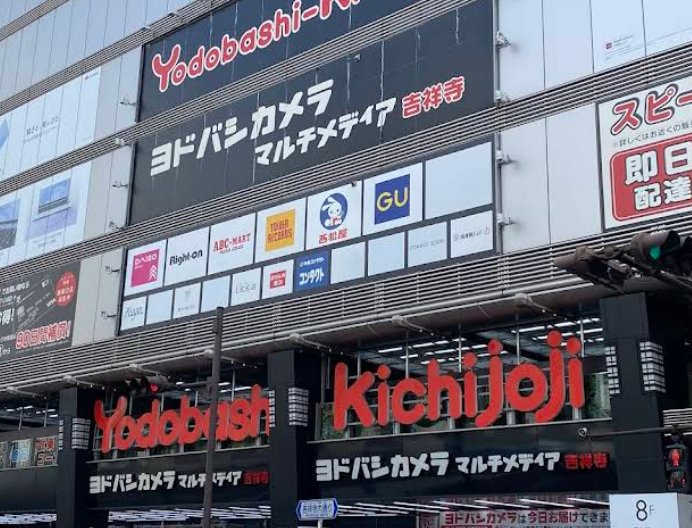

第一天 (2025/07/24)
臺北松山機場 (TSA)
16:50起飛。

東京羽田機場(HND)
20:50抵達，可以沿路去銀座找吃的。
第二天 - 銀座 (2025/07/25)

築地場外市場
朱二帶隊吃早餐

GU
旗艦店，有5樓，有15％折價

無印良品
旗艦店、3樓販售睡眠噴霧，1人最多限購五瓶、免稅結帳櫃檯在四樓
Marronnier Gate 銀座2館
UNIQLO、GU、大創、OK超市(宵夜可來，開到晚上9:30，可退稅)

東京站一番街（備案）
吃飯（拉麵街、動漫街）。
第三天 - 淺草 (2025/07/26)
查看第三天地圖清單


第四天 - 上野 (2025/07/27)

上野東照宮
拍照、散步。

上野恩賜公園
拍照、散步。
五條天神社、花園稻荷神社
拍照、散步。

一頭牛燒肉 房家
已預約，下午1點。

炸豬排 山家
便宜豬排飯。
上野阿美橫町
有吃的有逛的，很多藥妝，可去SUNGDRUG。
二木菓子 第一營業所
買零食。

多慶屋
像唐吉的地方，購物，有22%折價，樓下有超市，可以買宵夜。
第五天 - 龜有 (2025/07/28)

帝釋天參道
逛街、吃早餐。

大和家
吃午餐。
兩津勘吉像
拍照。
龜有旅遊服務中心
先去買票，一人700日圓。也可以線上先買

烏龍派出所紀念館
要買門票。

龜有香取神社
拍照。

Ario購物
有美食區，遊樂區，購物區。
第六天 - 吉祥寺 (2025/07/29)
吉祥寺SUN ROAD商店街
吃飯逛逛
鯛魚燒 くりこ庵
鯛魚燒，他和肉餅在隔壁
黑毛和牛炸肉餅 Satou
炸肉餅

Yodobashi 吉祥寺店
一棟大百貨，裡面有GU
三鷹之森吉卜力美術館
要預約，看朱二想不想去
井之頭恩賜公園
有多的時間可拍照逛逛
UNIQLO車站店
有時間可去
GU 車站店
有時間可去
第七天 - 巢鴨 (2025/07/30)
查看第七天地圖清單第八天 (2025/07/31)
東京羽田機場 (HND)
13:20起飛，10:20前到機場，可以早點起來收行李吃早餐。
臺北松山機場 (TSA)
15:50抵達。
備用行程
可以考慮納入行程的備用景點：
東京鐵塔、增上寺、芝公園 (港區)
沿路找吃的、散步、拍照。

朝日電視 (港區)
一樓免費參觀、朱三小屁孩、你的蠟筆給我小新、哆拉a夢。
麻布台之丘 (港區)
裡面有抹茶店、米店，33樓可以看到東京鐵塔，一人要500日圓和點一杯飲料
麻布十番商店街 (港區)
吃飯、逛街。
Dumbo 麻布十番店 (港區)
媽咪想吃蔓越莓甜甜圈
阿夫利拉麵 (港區)
可參考
豬排 王龍 (港區)
可參考
蛋包飯 麻布食堂 (港區)
可參考
Daiei 超市 (港區)
購物後回去休息
Diver City (台場)
有uniqlo、gu、門口有個大鋼彈機器人。

AQUA CiTY (台場)
另一個mall，無聊可來。
御台場海濱公園 (台場)
看自由女神。